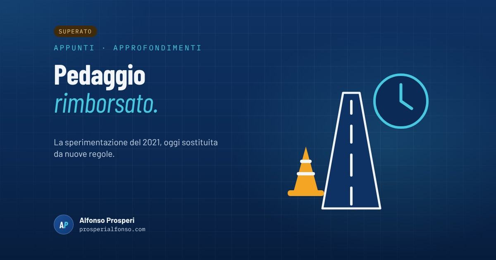

Tra il 15 settembre e il 31 dicembre 2021 Autostrade per l'Italia ha sperimentato un cashback sui pedaggi: un rimborso per chi accumulava ritardi a causa dei cantieri sulla sua rete.
Come funzionava
- Bisognava usare l'app ufficiale Free To X, che registrava il viaggio e calcolava il ritardo dovuto ai lavori.
- Il rimborso andava dal 25% al 100% del pedaggio, in base ai minuti di ritardo e ai chilometri percorsi, a partire da 15 minuti di ritardo.
- Per esempio, su un tratto breve di circa 30 chilometri bastava superare i 15 minuti di ritardo per avere tutto il pedaggio indietro; sui tragitti lunghi servivano ritardi maggiori.
- Valeva per tutti gli automobilisti, a prescindere dal motivo del viaggio, e i rimborsi arrivavano con bonifico sul conto corrente dall'inizio del 2022.
Cosa c'è oggi
Quella sperimentazione è finita. Dal 2026 sono previste nuove regole nazionali, stabilite dall'Autorità di regolazione dei trasporti, per rimborsare il pedaggio in caso di ritardi dovuti a cantieri o blocchi del traffico. Funzionano in modo diverso, quindi conviene informarsi sul sito del proprio gestore autostradale.